For Claude Code on the MacFür Claude Code auf dem Mac
AgentBar shows what every Claude Code session is doing, quiet until one needs you. And it comes with a tiny office where your agents actually work.AgentBar zeigt, was jede Claude-Code-Sitzung gerade tut, ruhig, bis eine dich braucht. Dazu ein kleines Büro, in dem deine Agenten wirklich arbeiten.
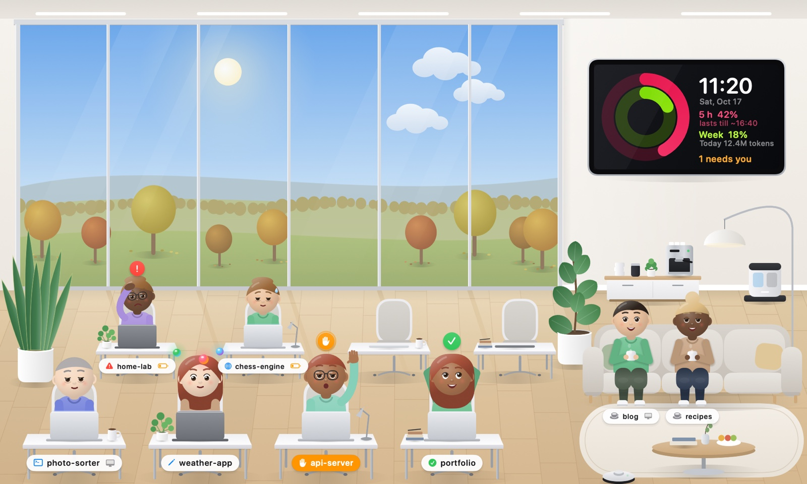
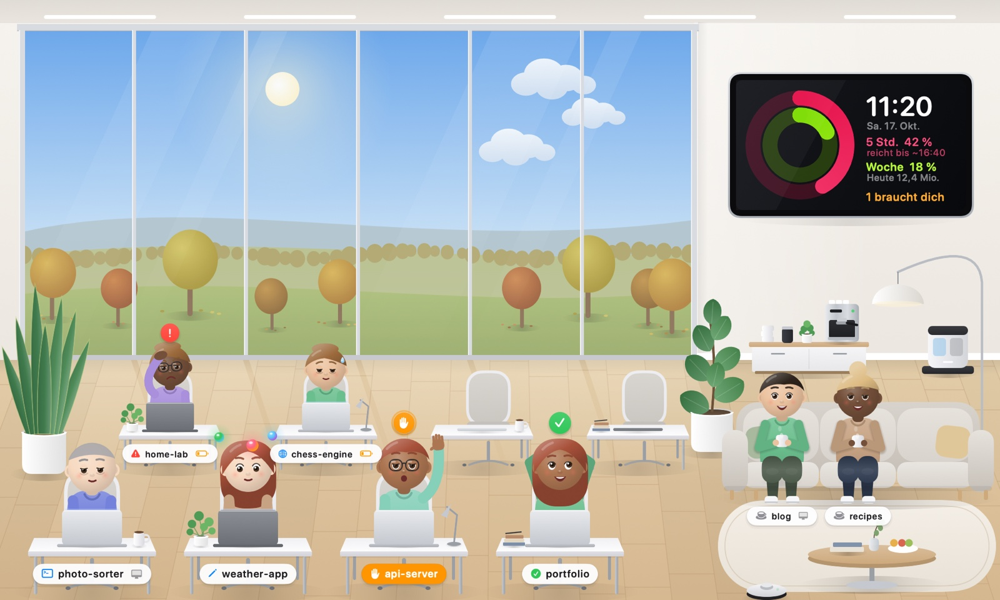
Just arrivedGerade neu
The latest releases gave the team a coffee bar, four seasons outside the window, a few holidays to dress up for and some moments you only catch now and then.Die letzten Releases haben dem Team eine Kaffeebar gebracht, vier Jahreszeiten vor dem Fenster, ein paar Feiertage zum Verkleiden und Momente, die man nur ab und zu erwischt.
Agents that just finished a task sometimes walk over to the espresso machine behind the sofa, queue up, have a little chat and bring the mug back to their desk.Agenten, die gerade eine Aufgabe erledigt haben, gehen manchmal zur Siebträgermaschine hinter dem Sofa, stellen sich an, plaudern kurz und nehmen die Tasse mit an den Schreibtisch.
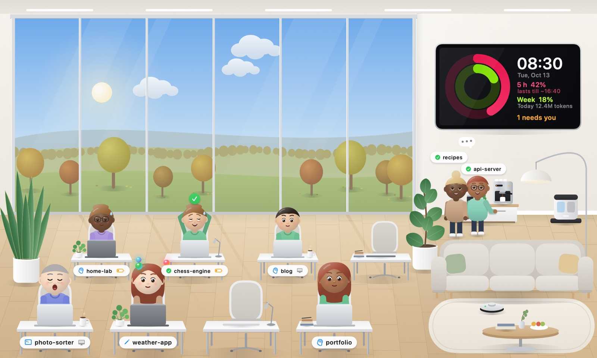
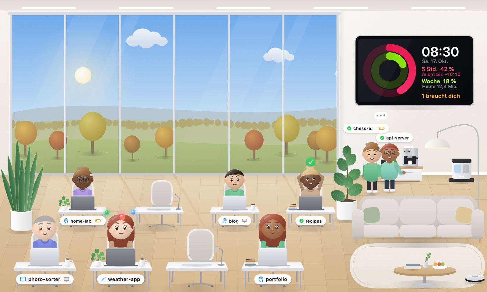
The trees blossom in spring, turn golden in autumn and go bare in winter. Flipped for the southern hemisphere once a weather location is set.Die Bäume blühen im Frühling, färben sich im Herbst golden und werden im Winter kahl. Auf der Südhalbkugel versetzt, sobald ein Wetter-Ort gesetzt ist.
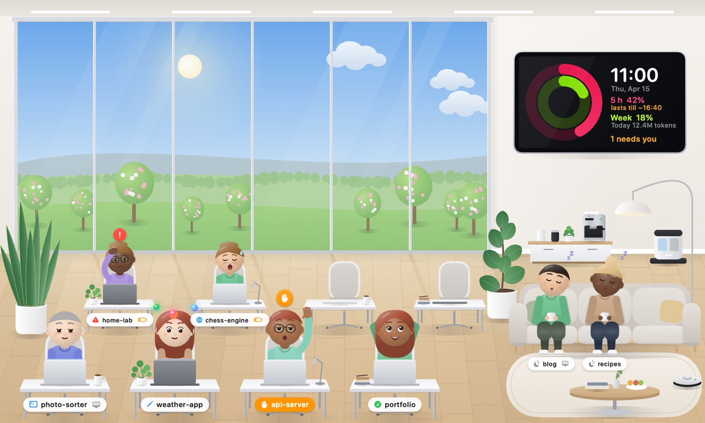
Pumpkins on the desks, paper bats on the glass, costumes for the team and a ghost sheet over the robot vacuum.Kürbisse auf den Tischen, Papier-Fledermäuse an der Scheibe, Kostüme fürs Team und ein Geisterlaken über dem Saugroboter.
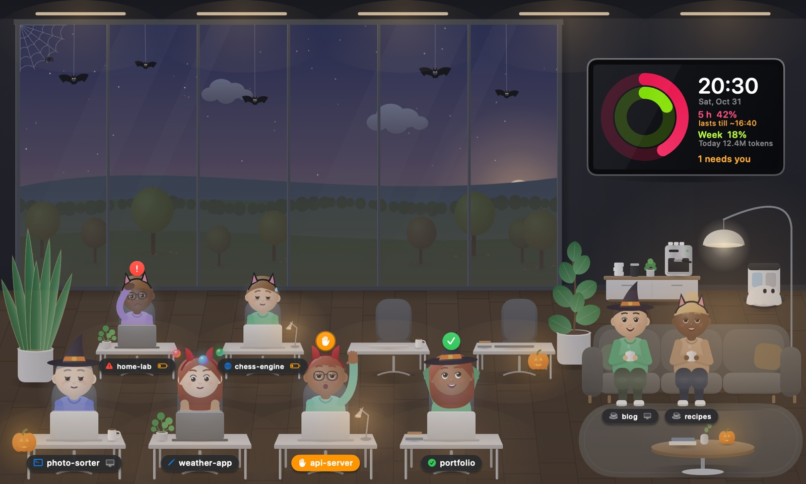
An egg tree, hidden eggs and bunny ears at Easter. Hearts in February. Advent, Christmas and New Year's Eve were already there.Ein Eierbaum, versteckte Eier und Hasenohren zu Ostern. Herzen im Februar. Advent, Weihnachten und Silvester gab es schon.
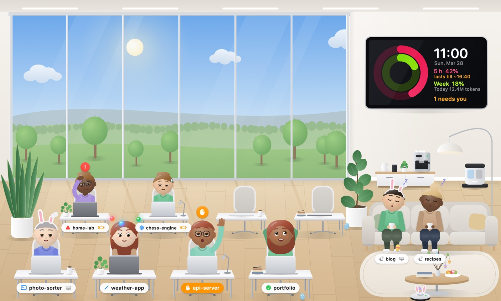
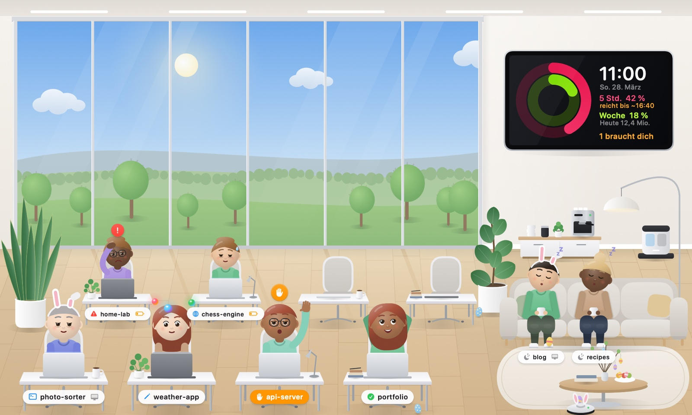
Some things only happen once in a while. Keep an eye on the window.Manches passiert nur hin und wieder. Behalt das Fenster im Blick.
Versions now count year.month.number: 26.10.11 is the 11th release of October 2026. The update check sees it as newer than 2.3.1, so nothing changes for you.Versionen zählen jetzt Jahr.Monat.Nummer: 26.10.11 ist das 11. Release im Oktober 2026. Die Update-Prüfung sieht es als neuer als 2.3.1 an, für dich ändert sich nichts.
The officeDas Büro
A floating window where each session is a character. They type while working, raise a hand when they need you, head to the lounge when idle and look more tired as their context fills up. Fresh again after /compact.Ein schwebendes Fenster, in dem jede Sitzung eine Figur ist. Sie tippen beim Arbeiten, heben die Hand, wenn sie dich brauchen, gehen in der Pause in die Lounge und wirken umso müder, je voller ihr Kontext ist. Nach /compact wieder frisch.
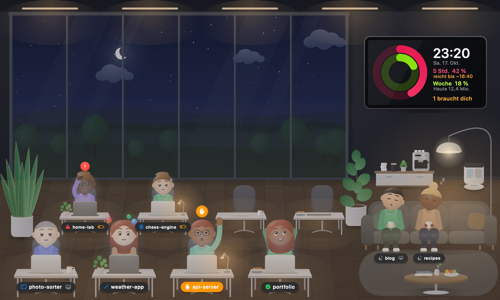
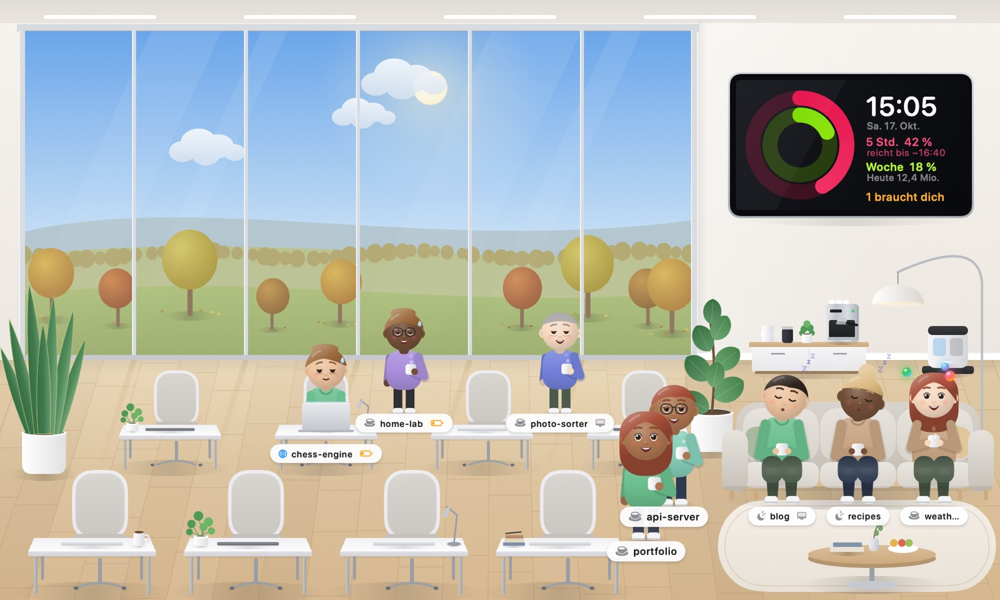
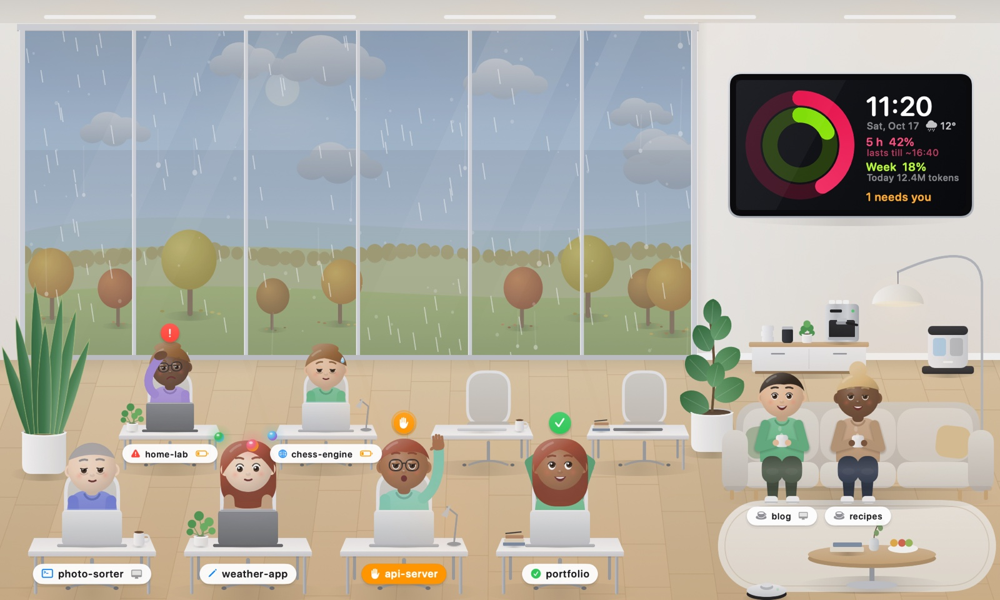
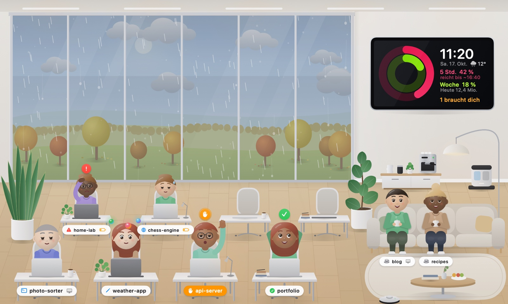
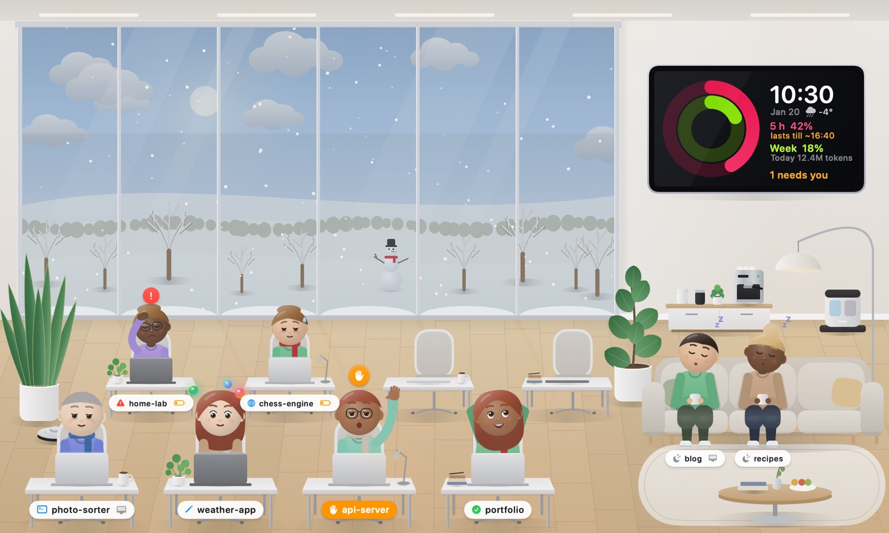
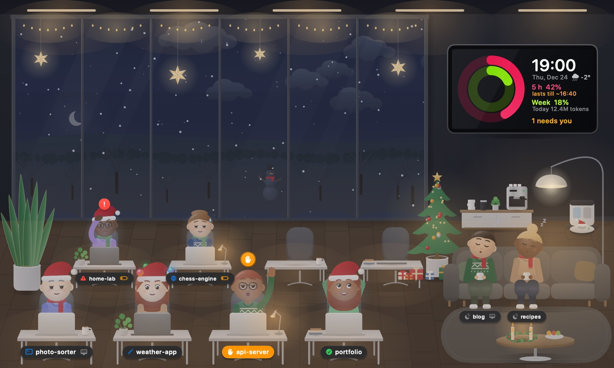
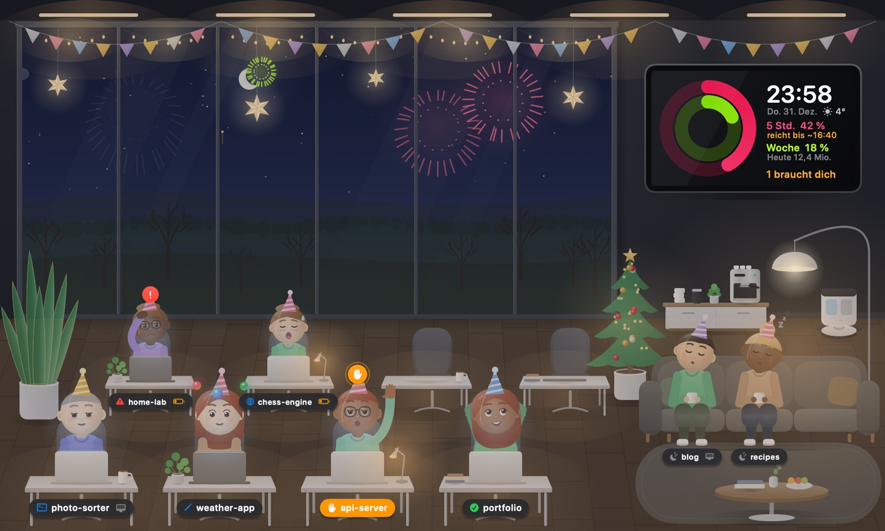
The sky follows your local time. Enter a location and you get clouds, rain, fog, thunderstorms and snow, the real sunrise and sunset, and lamps that come on when it's gloomy. Weather from Open-Meteo, only the location rounded to about 1 km is sent.Der Himmel folgt deiner Uhrzeit. Trag einen Ort ein, und du bekommst Wolken, Regen, Nebel, Gewitter und Schnee, den echten Sonnenauf- und -untergang und Lampen, die bei trübem Wetter angehen. Wetter von Open-Meteo, gesendet wird nur der Ort, auf etwa 1 km gerundet.
Subagents show up as glowing spheres around their character. The robot vacuum speeds up with your CPU load and docks in the evening.Subagenten erscheinen als leuchtende Kugeln um ihre Figur. Der Saugroboter wird mit der CPU-Last schneller und fährt abends in seine Ladestation.
Every character picks its own look each day and keeps it for the whole session. Click one and its Terminal tab comes to the front.Jede Figur wählt täglich ihren Look und behält ihn für die ganze Sitzung. Ein Klick holt ihren Terminal-Tab nach vorn.
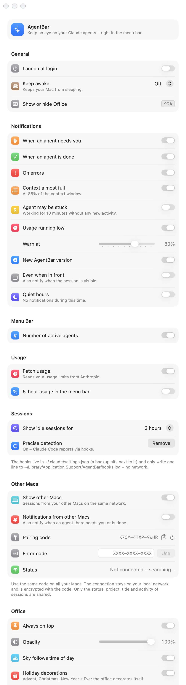
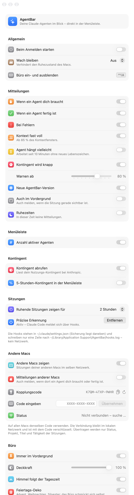
Other MacsAndere Macs
Pair your Macs with a code and the sessions running on the others show up in the menu and in the office, marked with a small device symbol. Discovery via Bonjour on your local network, every message encrypted with the pairing code.Koppel deine Macs per Code, und die Sitzungen der anderen erscheinen im Menü und im Büro, markiert mit einem kleinen Geräte-Symbol. Gefunden wird per Bonjour im lokalen Netzwerk, jede Nachricht ist mit dem Code verschlüsselt.
SetupEinrichten
No account, no installer. Just the app.Kein Konto, kein Installer. Nur die App.
AgentBar.zip from the latest release, unzip it and move AgentBar.app to /Applications.AgentBar.zip aus dem neuesten Release, entpacken und AgentBar.app in den Ordner Programme ziehen.xattr -dr com.apple.quarantine /Applications/AgentBar.app~/.claude/settings.json (with a backup). They only append status lines to a local file.~/.claude/settings.json ein (mit Sicherung). Sie schreiben nur Statuszeilen in eine lokale Datei.Only the first launch needs the Gatekeeper step. Later updates arrive through the built-in update window and are verified with an Ed25519 signature, bundle ID, version and code signature.Nur der erste Start braucht den Gatekeeper-Schritt. Spätere Updates kommen über das eingebaute Update-Fenster und werden per Ed25519-Signatur, Bundle-ID, Version und Code-Signatur geprüft.
Everything else is optional and off until you turn it on.Alles andere ist optional und aus, bis du es einschaltest.
AgentBar follows your macOS language: German or English.AgentBar folgt der Sprache deines Macs: Deutsch oder Englisch.
No Xcode needed, the Command Line Tools are enough.Xcode ist nicht nötig, die Command Line Tools reichen.
git clone https://github.com/SH1FT-W/agentbar.git
cd agentbar
./build.sh # build/AgentBar.app
./build.sh install # copies to /Applications and launchesVersions count year.month.number: 26.10.11 is the 11th release of October 2026, and the next month starts again at .1. Tags carry a v prefix.Versionen zählen Jahr.Monat.Nummer: 26.10.11 ist das 11. Release im Oktober 2026, der nächste Monat beginnt wieder bei .1. Tags tragen ein v davor.
PrivacyDatenschutz
AgentBar reads Claude Code's session logs, the Claude desktop metadata and its own hook log. No analytics, no telemetry.AgentBar liest die Sitzungsprotokolle von Claude Code, die Metadaten der Claude-App und das eigene Hook-Log. Keine Analyse, keine Telemetrie.
For the usage rings AgentBar reads Claude Code's login from the keychain and sends it only to Anthropic. It is never refreshed, modified or stored elsewhere.Für die Kontingent-Ringe liest AgentBar den Login von Claude Code aus dem Schlüsselbund und schickt ihn nur an Anthropic. Er wird nie erneuert, verändert oder woanders gespeichert.
api.anthropic.comyour plan usage, only while Fetch usage is ondein Kontingent, nur solange Kontingent abrufen an istapi.github.comchecking for updatesUpdate-Prüfungapi.open-meteo.comweather behind the office window, only once you enter a location; the location is rounded to about 1 kmWetter hinter der Glasfront, erst wenn du einen Ort einträgst; der Ort wird auf etwa 1 km gerundetYour other MacsDeine anderen Macsonly if you pair them, on the local network, encrypted with the pairing codenur wenn du sie koppelst, im lokalen Netzwerk, mit dem Kopplungscode verschlüsseltCredits
AgentBar was inspired by so-agentbar by sotthang. It is an independent rewrite with a different design and feature set.AgentBar wurde von so-agentbar von sotthang inspiriert. Es ist eine eigenständige Neuentwicklung mit anderem Design und Funktionsumfang.